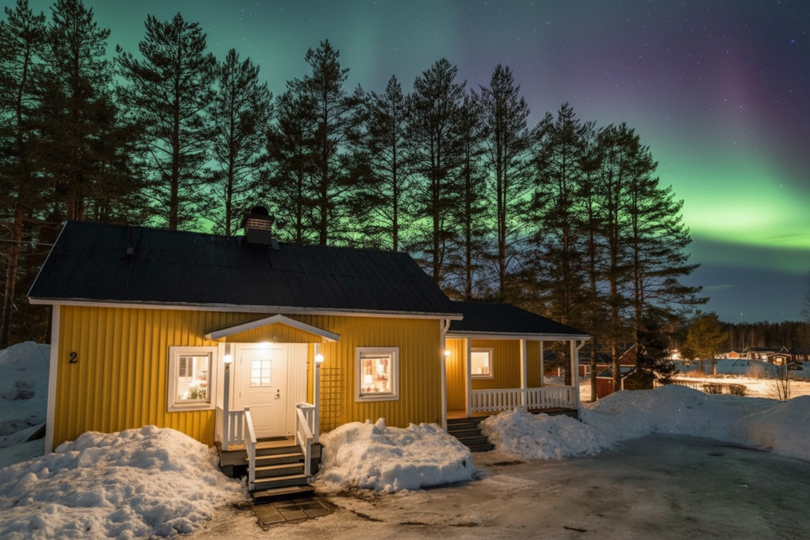

Private stay
The entire house is yours, with space for up to four guests.

Boreal One stay · Gyljen, Överkalix
A private house in Swedish Lapland, where forest, quiet roads, dark skies, and the Kalix River set the pace.
A private base in the North
The Yellow Aurora House is a private home for up to four guests in Gyljen, around 10 km from central Överkalix. It is operated by Boreal One AB and designed for guests who want the comfort of a home while staying close to the landscape.
Inside, there is a king bedroom, a sofa bed in the living room, a well-equipped kitchen, and a private sauna. Outside, the house has its own parking area and covered garage.
What is here
The entire house is yours, with space for up to four guests.
A simple place to warm up after a day outside.
Forest surroundings and a public riverside area about 80 metres away.
Private parking by the entrance and a covered garage for guests to use.
Dark skies, honestly described
Clear winter nights can offer beautiful Aurora viewing from the house or close nearby. The Northern Lights are a natural phenomenon, so weather, cloud cover, and solar activity always decide what the night brings.
Explore private Aurora experiencesA local stay
The house is in Gyljen, with Överkalix around 10 km away for groceries, restaurants, cafés, and everyday essentials. In summer, the area invites slower days by the river. In winter, the same landscape becomes quiet, snowy, and dark.
Plan your stay
A simple look at typical conditions around the Yellow Aurora House, from winter darkness to bright summer nights.
This is seasonal guidance, not a weather forecast. Conditions can change quickly.
Mosquitoes can be very active from June through September and may still be around in early autumn. Bring repellent and light long sleeves.
Seasonal guide
Before you book
The house accommodates up to four guests, with one king bedroom and a sofa bed in the living room.
Pets are welcome when arranged before arrival. A fee of 250 SEK or €25 applies per pet, per stay.
Gyljen Backgränd 2, 956 91 Överkalix, Sweden. The house is around 10 km from central Överkalix.
Availability, pricing, and reservations are managed through our Booking.com listing so the calendar stays accurate.
The official home of the property
The Yellow Aurora House is operated by Boreal One AB. Check the live calendar and book through Booking.com.
Check availability on Booking.com